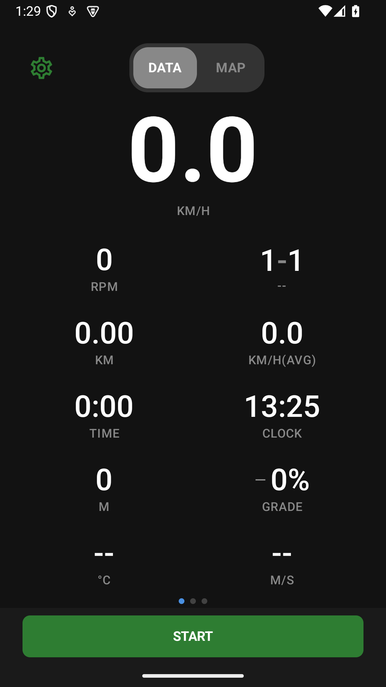
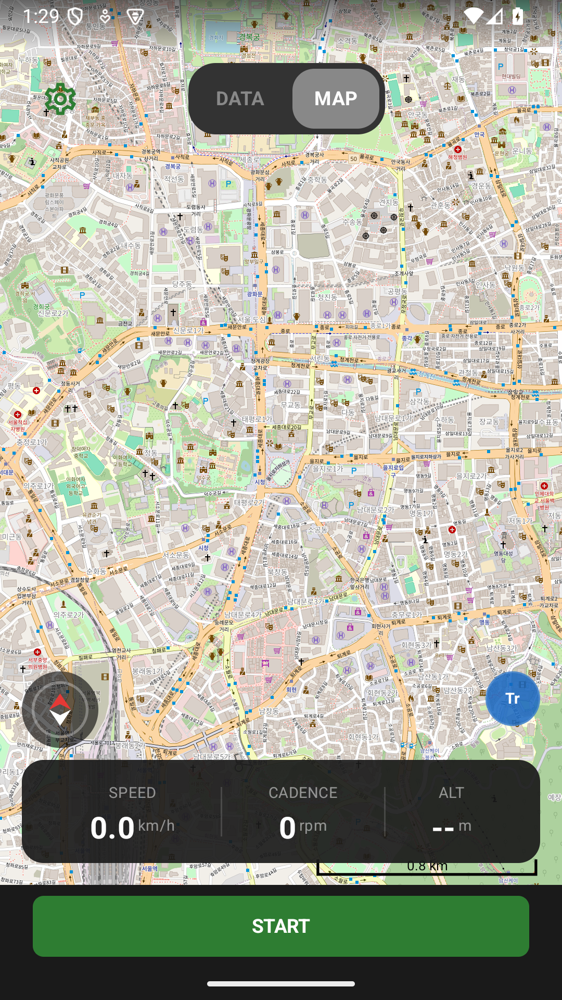
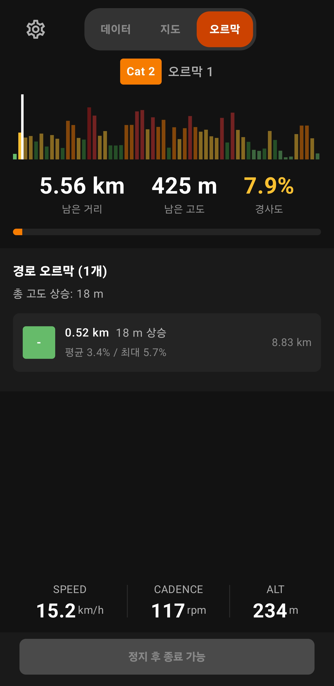

O-Rider의 메인 화면은 좌우 스와이프로 전환하는 페이지들로 구성됩니다. 평소에는 데이터 화면과 지도 화면 2개 페이지가 있으며, 경로를 불러온 뒤 오르막이 감지되면 ClimbPro 화면이 추가됩니다.

라이딩의 핵심 정보 — 속도, 케이던스, 심박수, 파워 등을 실시간으로 보여주는 메인 화면입니다.

데이터 화면에서 오른쪽으로 스와이프하면 나타나는 지도 화면입니다. 현재 위치와 이동 경로를 실시간으로 확인할 수 있어 낯선 코스에서 유용합니다.

언덕 구간에서 "얼마나 남았지?"라는 궁금증을 해결해 주는 화면입니다. 경로에 오르막이 감지된 경우에만 접근 가능하며, 현재 오르막의 진행률, 남은 거리/고도, 경사도 프로필을 실시간으로 보여줍니다.
화면 하단의 버튼으로 주행을 제어합니다. 주행 흐름은 아래와 같습니다.
| 동작 | 방법 |
|---|---|
| 시작 | 하단 시작 버튼을 탭 |
| 일시정지 | 하단 정지 버튼을 탭 (또는 자동 일시정지) |
| 재개 | 일시정지 상태에서 시작 버튼을 다시 탭 |
| 종료 | 일시정지 상태에서 정지 버튼을 탭하면 주행 종료 |
주행 중 랩 버튼을 탭하면 수동으로 랩을 기록합니다. 구간 시간, 평균 속도를 나눠서 비교하고 싶을 때 유용합니다. 자동 랩 설정 시 거리 또는 시간 기준으로 자동 기록됩니다.
신호 대기나 잠시 멈출 때 자동으로 기록을 일시정지하여 평균 속도가 왜곡되지 않도록 합니다.
| 설정 | 기본값 | 설명 |
|---|---|---|
| 자동 일시정지 속도 | 3.0 km/h | 이 속도 이하로 떨어지면 일시정지 |
| 자동 일시정지 지연 | 3초 | 임계값 이하 유지 시간 후 일시정지 발동 |
| 자동 랩 (거리) | 끔 | 설정 거리마다 자동 랩 기록 (예: 5km마다) |
| 자동 랩 (시간) | 끔 | 설정 시간마다 자동 랩 기록 (예: 10분마다) |